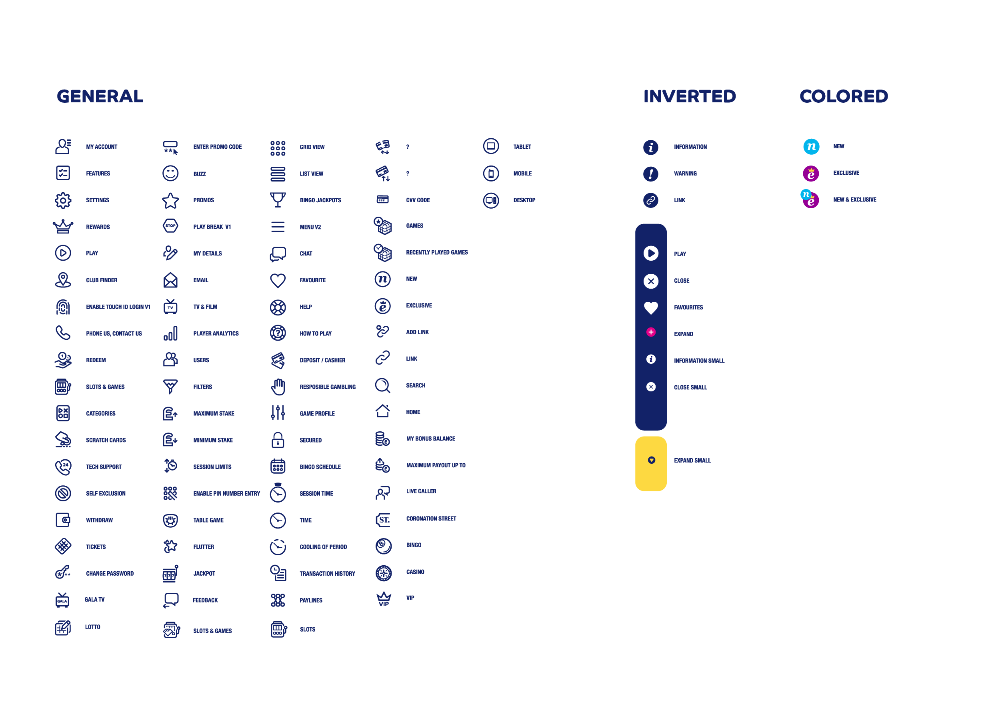
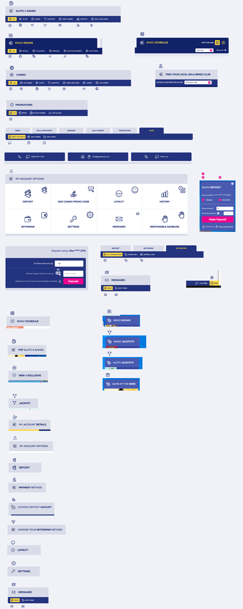

Some of the icons may be duplicates - please ignore duplicates
Some icons have different versions / (background) colors.
In such cases only ONE svg is necessary HOWEVER they must be treated specially.
For example: let's say one icon has 3 versions where one part of the SVG has a different fill depending on the context.
In this case the fill attribute should be set to currentColor. like this: fill="currentColor"
I can then take care of the different versions via CSS. If you need more information about this, I'd be happy to explain...
but here is a quick example for now:
Note that only one SVG file is referenced here,
but the CSS is altering the fill color in each case via the color property. (use inspect element to see this in action)
The most recent SVG set which I hae received is this one

The following is a list of issues with the current icon set:
The icon set is missing quite a few icons which are used in the website. I would like all icons to be located in one resource.
When I say 'icons' I am refering to all the current images on the site which are svg files, (so, for example, I'm NOT referring to
pngs which contain gradients like the 'page fold' png on the vip/benefits page, but I AM referring to SVG icons such as the crown icons in the same vip/benefits tab. )
Please see WPL-1922 and the following image which show all/most of the icons
which are used throughout the site. (Actually, there are a few more icons - such as the ones described here)

The current icon set has color data in the form of classes and CSS styles describing fill colors etc within the SVG.
All these styles must be REMOVED from the SVGs - EXCEPT for icons with static fills.
This is how the icon set currently looks- without the styling.
The current icon set containsw 91 icons and weighs 265Kb as individual SVGs and 184Kb
after being converted to a sprite.
This is TOO large. Something is wrong in the way the SVGs are being created. Please compare with the 2 icons set demos.
The futuramo icon set contains 210 icons and weighs 116Kb as individual SVGs and 79Kb
after being converted to a sprite.The Nova icon set contains 350 icons and weighs 416Kb (line icons) / 375Kb (solid icons) as individual SVGs and
191Kb (line icons) / 153Kb (solid icons) after being converted to a sprite.
One clear difference is that the viewBox size in the other icon sets are 24x24 or 32x32 unlike the current icon set which is 180x180.
I am not 100% certain that this is the reason for the larger file size though. Please look into this.
Requirements
Export to SVG
In Illustrator use “Save As” and pick “SVG” for the format. (It might be better to use “Export as…” and pick SVG for an optimized result.)
In Sketch you can select an artboard, click “Make Exportable” on the bottom right, and pick “SVG” for the format.
In Inkscape you can “Save As” and pick “Optimized SVG”.
Single-color icons:
In your SOURCE FILE, the paths are black (#000000).
In the EXPORTED CODE, there are no fill attributes.
If we have hardcoded fills in the SVG source, we won’t be able to change those colors from our CSS code.
So it’s generally best to remove them, at least for single-color icons.
Illustrator doesn’t output fill attributes for path that are fully black (#000000).
Sketch does, so you may have to open the exported SVG code and manually remove the fill="#000000" attributes.
Leave a little bit of space near the edges, especially for round shapes.
The SVG ViewBox should be square and all icons should use the same viewBox dimensions (eg. viewBox="0 0 32 32" )
The Target size for 100 icons: 50KB or less.
The SVG file names end up becoming ids for the individual svg icons to reference.
For this reason it is important that the SVG file names are descriptive yet succint and most important: don't contain whitespaces.
(NB: The way the current SVGs are named is FINE. I just included this point to emphasize that this is necessary.)
After running gulp-svg-sprite on the SVGs I get a large SVG sprite file.
Take a look at a demos: note that with this method we can use CSS to change the icon color (hover over the icons to see this in action)
Also notice that in order to change the size of the icons - we just need to modify the font-size (try this with inspect element)
{kind=link}
{kind=link}
{kind=link}
{kind=link}
{kind=link}
{kind=link}
{kind=link}